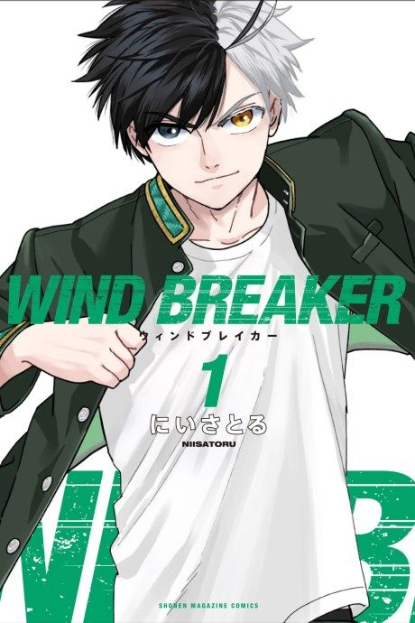

WIND BREAKER
WIND BREAKER
Sakura, a lone fighter, enrols at Furin High, a school for delinquents, where students fight to protect their town.
After the anime, read the manga from Chapter 92.
7.7AniList score
—Animeter, no votes yet
25episodes, 2 seasons
Rate it or report where you stopped
Is it worth pushing through?
Built from what visitors report across all 2 seasons (25 episodes).
Loading reports…Checking what other people said about this one.
Sign in above with your email to add your report.